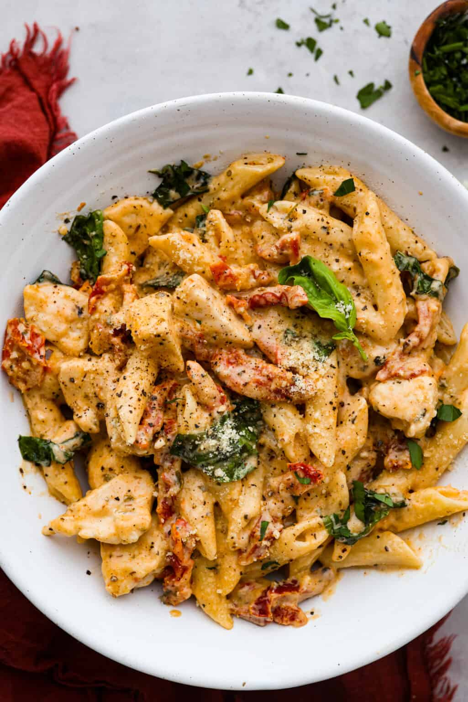

Back To Main Page

Chicken and pasta bro lol
Crazy good food bro trust me js try making it i made it before its tuff
- Chicken Breasts: Skinless, boneless chicken breasts cut into bite-sized pieces so they cook evenly.
- Penne Pasta: Traps the creamy sauce perfectly.
- Salt and Pepper: Basic seasonings give the marry me chicken pasta its first layer of flavor!
- Olive Oil: Used to sear the chicken in.
For the Creamy Sun-Dried Tomato Sauce:
- Butter: Creates a rich base for the sauce and adds creaminess.
- Garlic: Fresh minced garlic is best!
- Flour: To thicken up the sauce with.
- Chicken Broth: Adjusts the consistency of the sauce and also adds savory flavor.
- Heavy Cream: Creates a luxurious, creamy texture. You can also use half and half as a lighter option.
- Parmesan Cheese: Grated parmesan adds sharp, cheesy flavor and richness.
- Sun-Dried Tomatoes: Tangy and delicious, for that classic Marry Me flavor!
- Paprika: Adds a bit of smoky warmth.
- Italian Seasoning: Blend of herbs like oregano, basil, and thyme.
- Fresh Basil: Aromatic garnish that adds a pop of freshness!
- Cook Penne: Cook the pasta according to package instructions. Drain the pasta and then set aside while you prepare the chicken and sauce.
- Cut Chicken: Cut the chicken into 1-inch bite-sized pieces and season with salt and pepper.
- Sear Chicken: In a large skillet, heat the olive oil over medium-high heat. Add the chicken and cook for 6-8 minutes until the chicken is no longer pink and cooked through.
- Set Aside: Transfer the cooked chicken to a plate, and set it aside while you make the sauce.